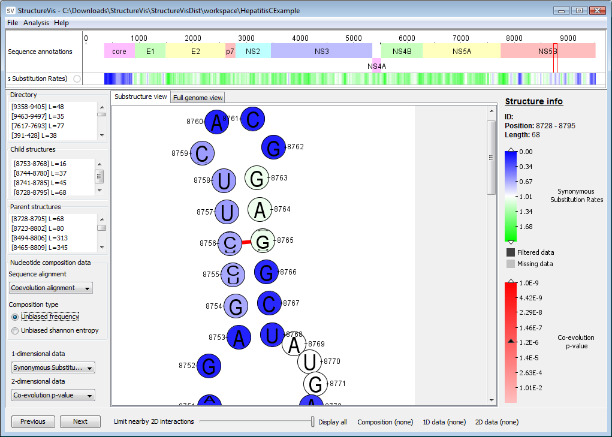
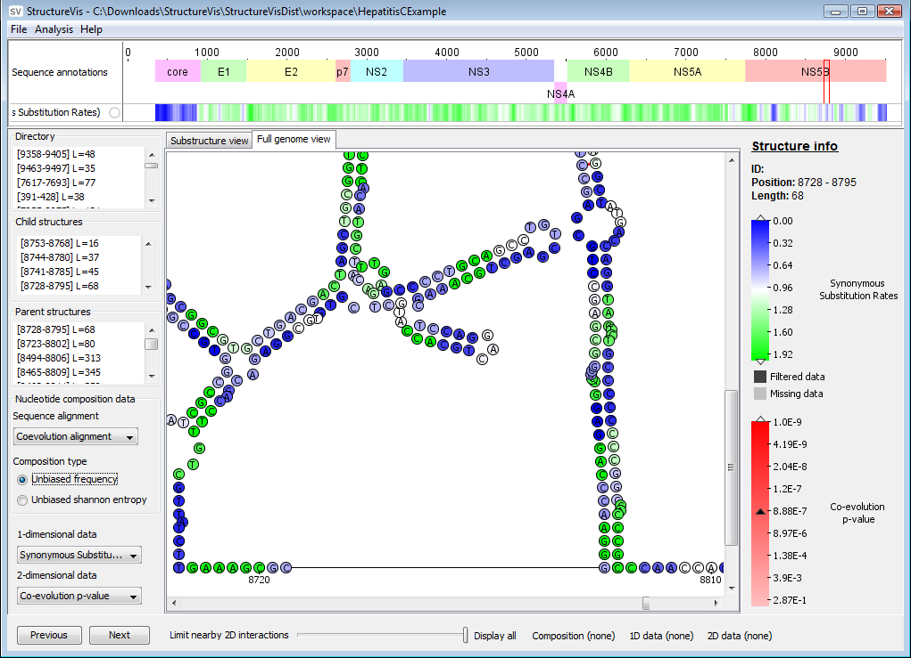
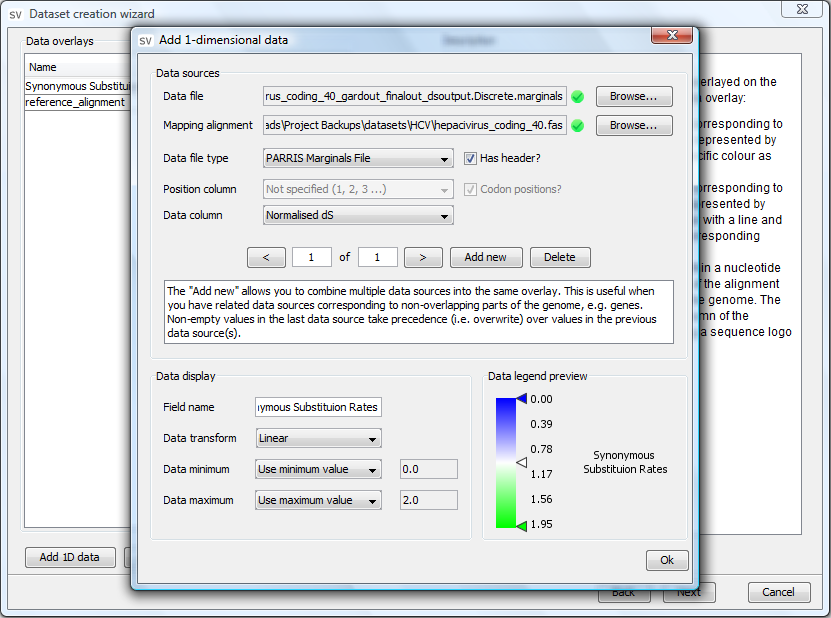

StructureVis
StructureVis is a tool for visualising RNA and DNA secondary structures.
Features
- Ability to visualise secondary structures of entire virus genomes.
- Ability to overlay and visualise heterogenous data sources.
- Automated ranking of structures.
- Substructure and full-genome views.
- On the fly filtering of numeric data.
- Save structure and data legend images for use in publication, in various formats (PNG, SVG and EMF).
- A dataset creator for creating your own datasets.
Download
StructureVis.zip (17MB) (Version 1.0 - 03 October 2012)
Manual
It is recommended that you view the user manual that comes with the StructureVis distribution, however, if you wish to view an online version click here.
Source code availability
StructureVis is written in Java and the source code is licensed under GPLv3. The source code is available at our GitHub repository.
Screenshots

StructureVis substructure view

StructureVis full genome view

StructureVis dataset creator